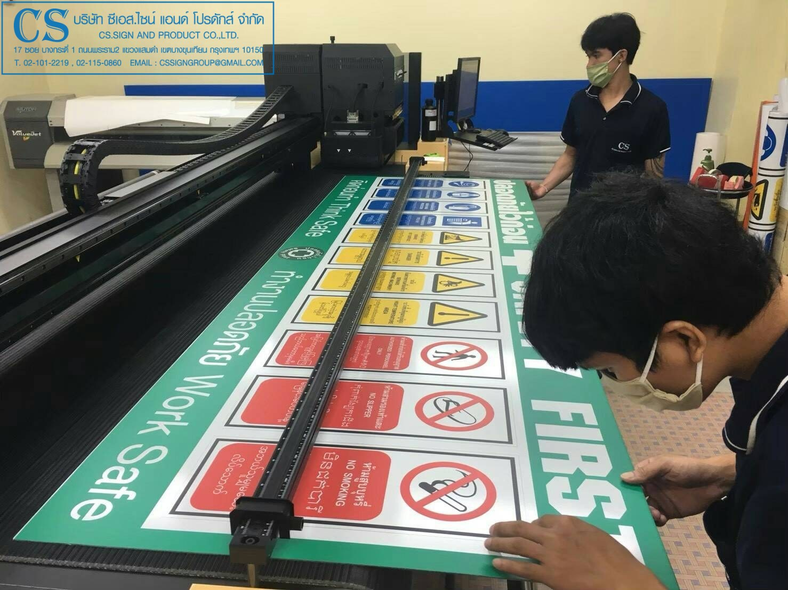
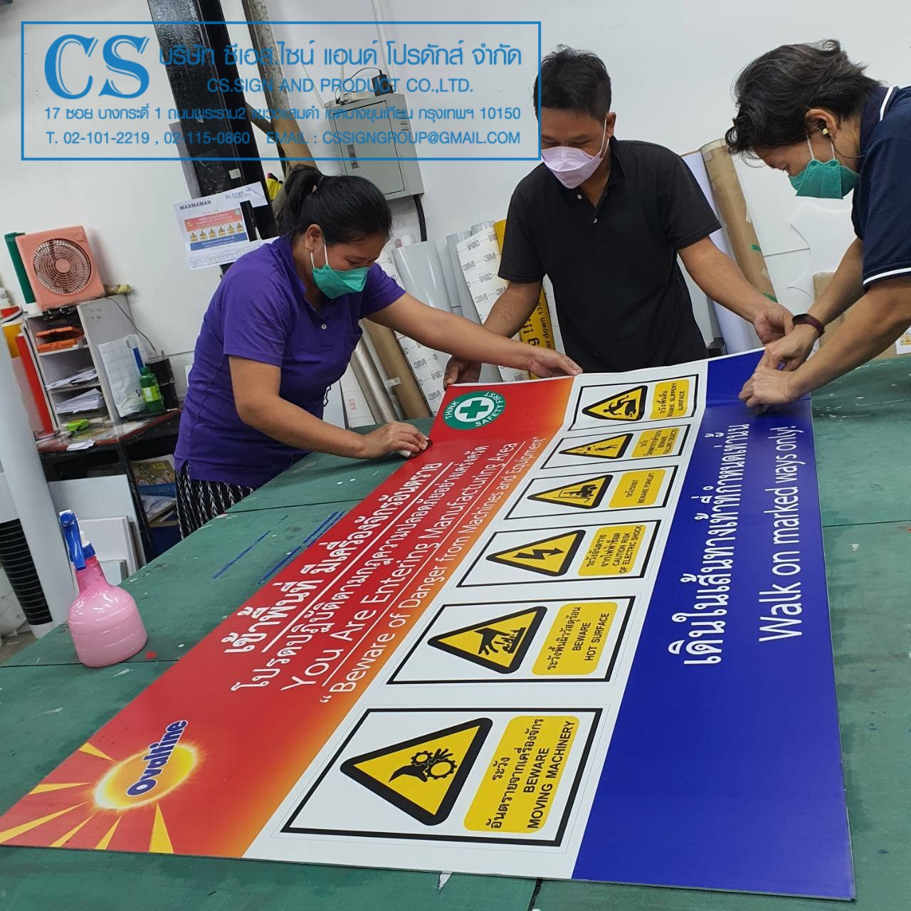
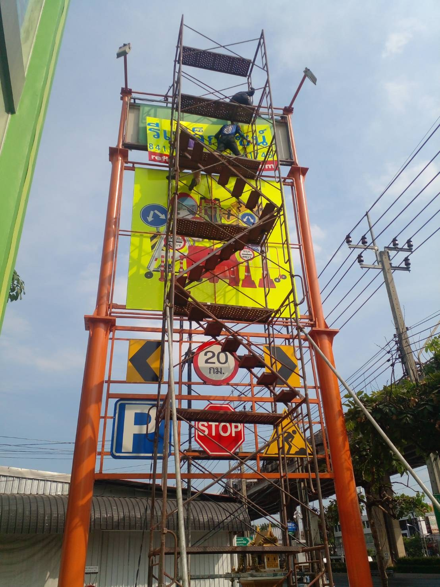
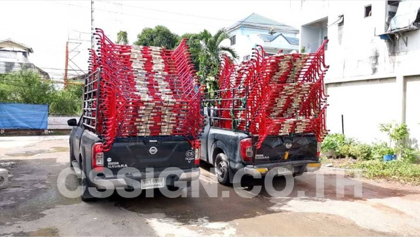

รูปทรงและสี คือภาษาที่
เร็วที่สุด ของความปลอดภัย
ก่อนใครจะอ่านตัวหนังสือทัน สามเหลี่ยม วงกลม และสี่เหลี่ยม ได้สื่อสารไปแล้วว่าต้องระวัง ต้องทำ หรือแค่ต้องรู้ CS.SIGN คือผู้เชี่ยวชาญด้านป้ายเซฟตี้ ป้ายห้าม ป้ายเตือน และป้ายบังคับ สำหรับโรงงานอุตสาหกรรมและสถานประกอบการทุกประเภท รวมถึงป้ายจราจรและอุปกรณ์จราจรสำหรับงานทั่วประเทศ
WE ARE
MANUFACTURERS
Specializing in quality industrial signage
เราคือผู้เชี่ยวชาญการผลิตป้ายเพื่อความปลอดภัย ป้ายเซฟตี้ ป้ายห้าม ป้ายเตือน ป้ายบังคับ สำหรับโรงงานอุตสาหกรรม และสถานประกอบการทุกประเภท รวมถึง ป้ายจราจร อุปกรณ์จราจร สำหรับงานจราจรทั่วประเทศ
ด้วยความมุ่งมั่นของผู้บริหารที่ต้องการช่วยผลักดันให้แรงงานไทยทำงานบนความตระหนักเรื่องความปลอดภัยต่อชีวิต และทรัพย์สิน เป็นสำคัญ จึงเน้นให้คำปรึกษา ประเมินความเสี่ยงจุดที่มีโอกาสจะเกิดอุบัติเหตุ และพร้อมแบ่งปันประสบการณ์กว่า 20 ปี ที่ได้เก็บเกี่ยวความรู้ ความเข้าใจในการเลือกวัสดุป้าย สัญลักษณ์ และสีที่ถูกต้องเหมาะสมตามหลักของมาตรฐานความปลอดภัย
ช่วยลดความผิดพลาดในการตัดสินใจเลือกซื้อ ช่วยให้ลูกค้าได้รับสินค้าที่มีคุณภาพในราคาที่เหมาะสม จึงสร้างความพึงพอใจให้กับลูกค้าที่ใช้บริการกับ บริษัท ซีเอส.ไซน์ แอนด์ โปรดักส์ จำกัด ตลอดระยะเวลาที่ผ่านมา
เบื้องหลังป้ายทุกแผ่น
ที่ส่งถึงมือคุณ
สายการผลิต ทีมควบคุมคุณภาพ และทีมช่างติดตั้งหน้างานจริง — ตัวตนของ CS.SIGN เบื้องหลังทุกออเดอร์

ในโรงงาน

คุณภาพ

หน้างานจริง

การจัดส่ง
ความรู้ที่เราแบ่งปัน
ให้ทุกการตัดสินใจ
กดที่การ์ดเพื่อดูรายละเอียด — สามองค์ประกอบที่เราให้คำปรึกษาก่อนผลิตป้ายทุกครั้ง
วัสดุป้าย
แตะเพื่อดูรายละเอียดเลือกให้ทนกับหน้างานจริง
อะลูมิเนียมสะท้อนแสง สติกเกอร์ PVC หรืออะคริลิค — เลือกตามสภาพแวดล้อม แดด ฝน ความชื้น และอายุการใช้งานที่ต้องการ ไม่ใช่แค่ราคาถูกที่สุด
สัญลักษณ์
แตะเพื่อดูรายละเอียดเข้าใจได้ทันที ไม่ต้องอ่าน
ออกแบบตามหลักสัญลักษณ์สากลที่คนหน้างานคุ้นตา ให้ทุกคนเข้าใจตรงกันได้ในเสี้ยววินาที แม้ในสถานการณ์เร่งด่วน
สี
แตะเพื่อดูรายละเอียดสีที่ถูกต้อง คือความปลอดภัย
แดง = ห้าม, เหลือง = เตือนภัย, น้ำเงิน = บังคับปฏิบัติ, เขียว = ปลอดภัย/ทางออก — เราเลือกเฉดสีให้ตรงตามหลักความปลอดภัย ไม่ใช่แค่สีสวย
ป้ายทุกแผ่น เริ่มจาก
ความตั้งใจที่จะปกป้องคน
ด้วยความมุ่งมั่นของผู้บริหารที่ต้องการช่วยผลักดันให้แรงงานไทยทำงานบนความตระหนักเรื่องความปลอดภัยต่อชีวิตและทรัพย์สินเป็นสำคัญ CS.SIGN จึงไม่ได้ทำหน้าที่แค่ผลิตป้ายตามแบบที่ลูกค้าส่งมา แต่เน้นให้คำปรึกษาและประเมินความเสี่ยงในจุดที่มีโอกาสจะเกิดอุบัติเหตุ ก่อนแนะนำป้ายที่เหมาะกับหน้างานจริง
- ให้คำปรึกษาและลงพื้นที่ประเมินความเสี่ยงก่อนเสนอราคา
- แบ่งปันประสบการณ์กว่า 20 ปี เรื่องวัสดุ สัญลักษณ์ และสีที่ถูกต้อง
- ช่วยลดความผิดพลาดในการตัดสินใจเลือกซื้อป้าย
ให้คำปรึกษาและประเมิน
ความเสี่ยงหน้างานจริง
รับฟังโจทย์
ฟังความต้องการและลักษณะหน้างาน ไม่ว่าจะเป็นโรงงาน สถานประกอบการ หรือพื้นที่จราจร
ประเมินจุดเสี่ยง
ชี้จุดที่มีโอกาสเกิดอุบัติเหตุ พร้อมคำแนะนำเบื้องต้นก่อนตัดสินใจเลือกซื้อ
แนะนำวัสดุ สัญลักษณ์ สี
เลือกให้เหมาะกับความเสี่ยงและงบประมาณ ในราคาที่เหมาะสม ไม่ขายเกินความจำเป็น
ผลิตและส่งมอบ
ตรวจคุณภาพก่อนส่งมอบทุกครั้ง พร้อมคำแนะนำการติดตั้งหน้างาน
ไม่มีค่าใช้จ่ายในการให้คำปรึกษาและประเมินเบื้องต้น
หลักที่เราไม่ยอมประนีประนอม
ตรวจก่อนทุกล็อต ไม่ใช่แค่สุ่ม
วัสดุ สี และงานพิมพ์ ผ่านการตรวจสอบก่อนส่งมอบทุกครั้ง ไม่ใช่แค่ชิ้นตัวอย่าง
ราคาและเวลาที่บอกตรงๆ
เสนอราคาชัดเจนตั้งแต่ต้น ไม่มีค่าใช้จ่ายแอบแฝง แจ้งระยะเวลาผลิตตามจริง
ผ่านงานจริงมากว่า 20 ปี
ทีมงานเข้าใจหน้างาน ช่วยเลือกวัสดุและสัญลักษณ์ให้เหมาะกับความเสี่ยงแต่ละพื้นที่
ป้ายที่ดี ช่วยรักษาชีวิตได้จริง
เรารู้ว่างานที่ทำมีผลต่อความปลอดภัยของคนหน้างาน จึงไม่ลดมาตรฐานเพื่อความเร็ว
คำถามที่พบบ่อย
ผลิตและจำหน่ายป้ายความปลอดภัย ป้ายจราจร ป้ายทางออกฉุกเฉิน และอุปกรณ์จราจร ทั้งสินค้าสต็อกพร้อมส่งและงานสั่งผลิตตามแบบ พร้อมสำรวจพื้นที่และติดตั้ง
เชี่ยวชาญเฉพาะทางด้านป้ายความปลอดภัยมากว่า 20 ปี มีสต็อกพร้อมส่ง และเข้าใจหลักการออกแบบสัญลักษณ์สากลตั้งแต่ขั้นตอนให้คำปรึกษา
ทักผ่าน LINE โทรศัพท์ หรือแบบฟอร์มออนไลน์ ทีมงานจะประเมินความต้องการและเสนอราคาให้ฟรี ไม่มีค่าใช้จ่ายในการปรึกษา
มีทีมสนับสนุนตอบกลับภายใน 24 ชั่วโมง รองรับการสั่งซื้อเพิ่มเติม และดูแลแก้ไขปัญหาหลังส่งมอบให้ตลอด
ป้ายทุกชิ้นที่ผลิตโดย CS.SIGN รับประกันคุณภาพวัสดุและงานผลิตเป็นเวลา 6 เดือนหลังส่งมอบ ครอบคลุมกรณีชำรุดจากขั้นตอนการผลิต ดูเงื่อนไขเพิ่มเติมได้ที่หน้านโยบายคุณภาพ
พร้อมร่วมงานกับ CS.SIGN?
ทีมผู้เชี่ยวชาญของเราพร้อมให้คำปรึกษา ออกแบบ Artwork ฟรี และเสนอราคาภายใน 24 ชั่วโมง